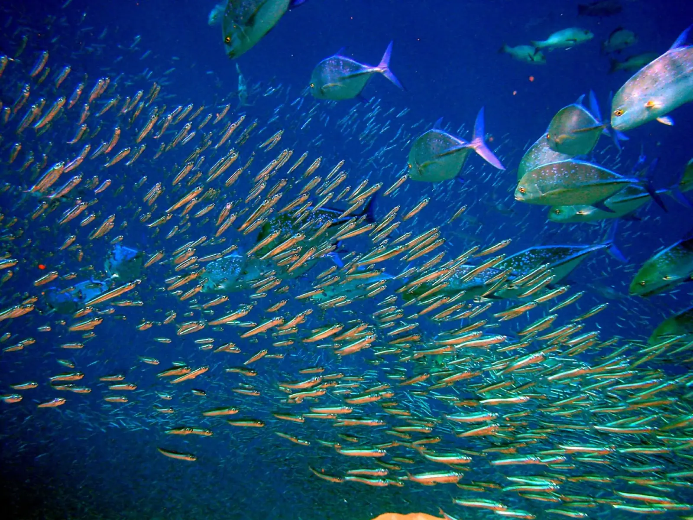

Atoll d'Ari
Maldives · plongée, snorkeling, baignade

Lagons turquoise et tombants : raies mantas, requins-baleines et jardins de corail, du snorkeling à la plongée.
- Lieu
- Maldives
- Niveau
- Débutant
- Activités
- plongée, snorkeling, baignade
- Type d'eau
- Mer / océan
- Coordonnées
- 3.90, 72.83 (position approximative du secteur)
Dangers à connaître
- Courants dans les passes (channels).
- Soleil très fort.
Le conseil d'Ocean Buddy
Le snorkeling depuis le lagon convient à toute la famille.
Ouvrir dans Ocean Buddy Télécharger sur l'App Store
Source : Description historique Ocean Buddy · vérification externe en attente.